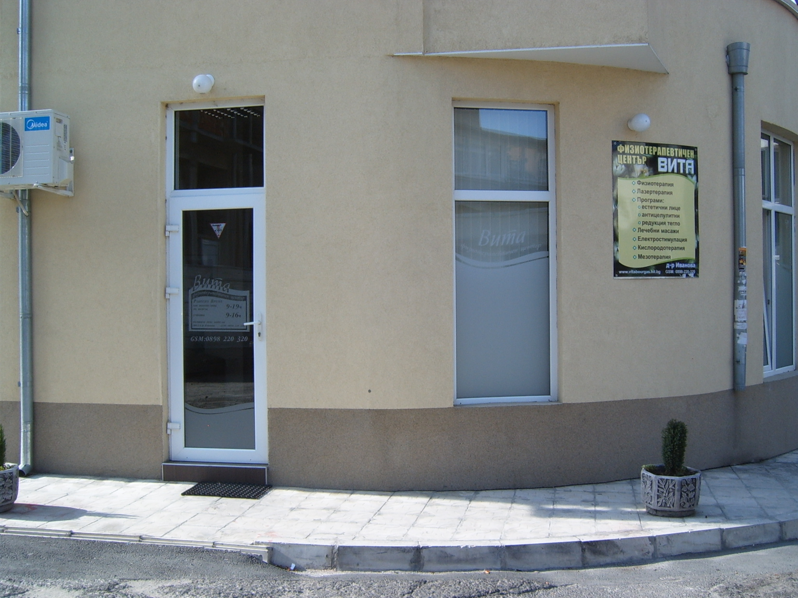

|
Специалният център за физиотерапия, рехабилитация и естетична медицина "Вита" - гр. Бургас е основан като модерен физиотерапевтичен център от д-р Иванова-Ангелова през 2001 г. От 2008 година функционира и нов - разширен и мултифункционален център на ул. "Батак" 46 в който умело са съчетани грижите за пациенти с ортопедични, неврологични, УНГ, гастростерологични и кожни заболявания с най-новите технологии в областта на естетичната медицина, медицинската козметика и Wellness процедурите. Физиотерапевтичният център е разположен в партерно помещение в близост до Частна поликлиника "Бургас". Центърът разполага с лекарски и за лазертерапия кабинет, кабини за физиотерапевтични процедури, кабинет и помещение за Wellness процедури. Продължава да функционира и физиотерапията в к-с "Лазур" бл.5 вх.Г ет.1 Във физиотерапевтичния център работят рехабилитатори, които са изключително добри специалисти, отнасящи се с всеотдайност към работата си с внимание към пациентите. Практикуват мануален лимфен дренаж, юмейхо терапия, спезиализирани техники по Mulligan и мекотъканни мобилизации по Terrier. Oт 2013г. се поставят и обемни филъри Radisse. |
 |
За Нас ПРОМОЦИЯ
Д-р Иванова
Д-р Иванова е родена в град Бургас в лекарско семейство. Завършва немска гимназия с пълно отличие. Медицинското си образование получава във ВМИ гр.Варна. Придобива специалност физикална и рехабилитационна медицина през 1999г. в гр.София. Практикува мануална терапия, ПИР, лазертерапия, преминава обучение за поставяне на филъри с хиалуронова киселина и мезотерапия за лице и тяло към "JD Mediсals" гр.София. През 2012 г.специализира в Милано терапия с ГУНА колаген при проф. Милани и естетична медицина и акупунктура при проф.Беллис.Същата година завършва и специализацията си по Неврална терапия към Австрийското Медицинско Дружество по Неврална Терапия.